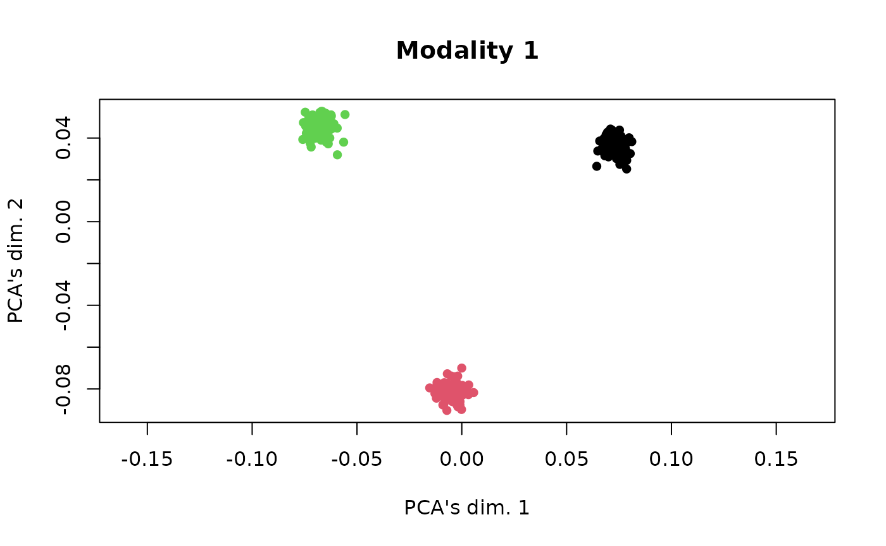
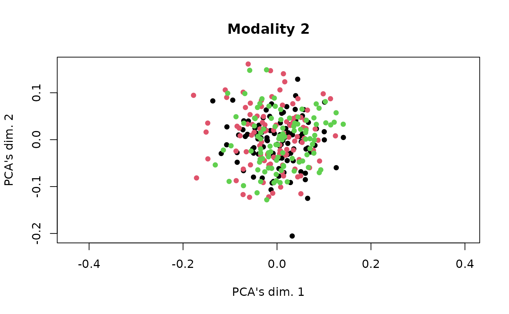
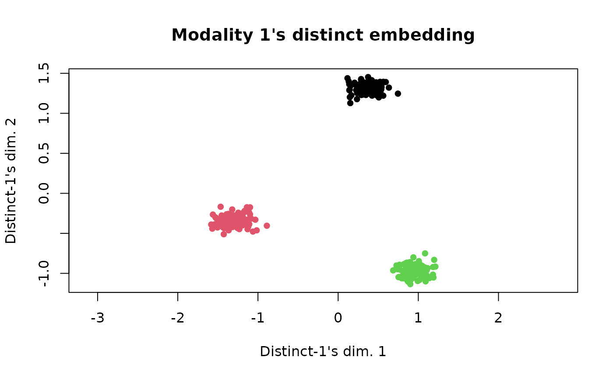
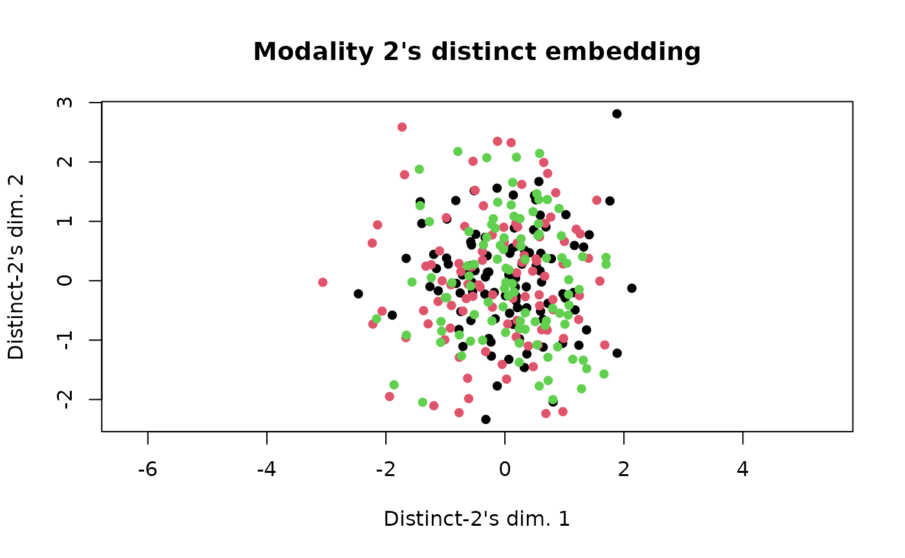

Tilted-CCA Overivew
tiltedCCA.RmdSimulate data
n_clust <- 100
B_mat1 <- matrix(c(0.9, 0.1, 0.1,
0.1, 0.9, 0.1,
0.1, 0.1, 0.9), 3, 3, byrow = T)
K <- ncol(B_mat1)
membership_vec <- c(rep(1, n_clust), rep(2, n_clust), rep(3, n_clust))
true_cluster <- c(rep(1, n_clust), rep(2, n_clust), rep(3, n_clust))
n <- length(membership_vec); true_membership_vec <- membership_vec
svd_u_1 <- tiltedCCA::generate_sbm_orthogonal(B_mat1, membership_vec, centered = T)[,1:2]
svd_u_2 <- tiltedCCA::generate_random_orthogonal(n, 2, centered = T)
p_1 <- 10; p_2 <- 10
svd_d_1 <- sqrt(n*p_1)*c(1.5,1); svd_d_2 <- sqrt(n*p_2)*c(1.5,1)
svd_v_1 <- tiltedCCA::generate_random_orthogonal(p_1, 2)
svd_v_2 <- tiltedCCA::generate_random_orthogonal(p_2, 2)
mat_1 <- tcrossprod(svd_u_1 %*% diag(svd_d_1), svd_v_1)
mat_2 <- tcrossprod(svd_u_2 %*% diag(svd_d_2), svd_v_2)
clustering_1 <- factor(stats::kmeans(mat_1, centers = 3)$cluster)
clustering_2 <- factor(rep(1, length(membership_vec)))
rownames(mat_1) <- paste0("n", 1:nrow(mat_1))
rownames(mat_2) <- paste0("n", 1:nrow(mat_2))
colnames(mat_1) <- paste0("g", 1:ncol(mat_1))
colnames(mat_2) <- paste0("p", 1:ncol(mat_2))
mat_1[1:5,1:5]
#> g1 g2 g3 g4 g5
#> n1 0.9514561 0.2236078 -2.480528 1.743431 1.182773
#> n2 0.9685308 0.2204136 -2.550255 1.781280 1.229422
#> n3 0.9222505 0.1808805 -2.529845 1.722569 1.272979
#> n4 0.9023105 0.0994310 -2.746395 1.755924 1.518981
#> n5 0.9071086 0.1178828 -2.698301 1.748942 1.463833
mat_2[1:5,1:5]
#> p1 p2 p3 p4 p5
#> n1 -1.7050201 1.1970268 -0.11672665 -2.630653617 2.5907433
#> n2 0.1066401 -0.1285672 0.02396835 0.973541026 -1.1199246
#> n3 -1.3969459 0.8017209 -0.04007018 0.541677939 -1.0707010
#> n4 1.8693300 -1.1207408 0.06849209 -0.003001763 0.5780767
#> n5 -1.1056130 0.8892106 -0.11076595 -3.408288709 3.6957074Apply Tilted-CCA
set.seed(10)
multiSVD_obj <- tiltedCCA::create_multiSVD(mat_1 = mat_1, mat_2 = mat_2,
dims_1 = 1:2, dims_2 = 1:2,
center_1 = F, center_2 = F,
normalize_row = T,
normalize_singular_value = F,
recenter_1 = F, recenter_2 = F,
rescale_1 = F, rescale_2 = F,
scale_1 = F, scale_2 = F)
multiSVD_obj <- tiltedCCA::form_metacells(input_obj = multiSVD_obj,
large_clustering_1 = clustering_1,
large_clustering_2 = clustering_2,
num_metacells = NULL)
multiSVD_obj <- tiltedCCA::compute_snns(input_obj = multiSVD_obj,
latent_k = 2,
num_neigh = 10,
bool_cosine = T,
bool_intersect = T,
min_deg = 1)
multiSVD_obj <- tiltedCCA::tiltedCCA(input_obj = multiSVD_obj)
multiSVD_obj <- tiltedCCA::fine_tuning(input_obj = multiSVD_obj,
verbose = 0)
multiSVD_obj <- tiltedCCA::tiltedCCA_decomposition(multiSVD_obj)
names(multiSVD_obj)
#> [1] "svd_1" "svd_2" "default_assay" "param"
#> [5] "metacell_obj" "snn_list" "laplacian_list" "cca_obj"
#> [9] "tcca_obj" "common_mat_1" "distinct_mat_1" "common_mat_2"
#> [13] "distinct_mat_2"Plot the data
plot(multiSVD_obj$svd_1$u[,1], multiSVD_obj$svd_1$u[,2],
main = "Modality 1",
xlab = "PCA's dim. 1", ylab = "PCA's dim. 2",
pch = 16, col = true_cluster, asp = T)
plot(multiSVD_obj$svd_2$u[,1], multiSVD_obj$svd_2$u[,2],
main = "Modality 2",
xlab = "PCA's dim. 1", ylab = "PCA's dim. 2",
pch = 16, col = true_cluster, asp = T)
Plot Tilted-CCA’s result
plot(multiSVD_obj$tcca_obj$common_score[,1], multiSVD_obj$tcca_obj$common_score[,2],
main = "Common embedding",
xlab = "Common's dim. 1", ylab = "Common's dim. 2",
pch = 16, col = true_cluster, asp = T)
plot(multiSVD_obj$tcca_obj$distinct_score_1[,1], multiSVD_obj$tcca_obj$distinct_score_1[,2],
main = "Modality 1's distinct embedding",
xlab = "Distinct-1's dim. 1", ylab = "Distinct-1's dim. 2",
pch = 16, col = true_cluster, asp = T)
plot(multiSVD_obj$tcca_obj$distinct_score_2[,1], multiSVD_obj$tcca_obj$distinct_score_2[,2],
main = "Modality 2's distinct embedding",
xlab = "Distinct-2's dim. 1", ylab = "Distinct-2's dim. 2",
pch = 16, col = true_cluster, asp = T)
For comparison, plot Consensus PCA
set.seed(10)
consensus_pca <- tiltedCCA:::consensus_pca(mat_1 = mat_1, mat_2 = mat_2,
dims_1 = 1:2, dims_2 = 1:2,
dims_consensus = 1:2,
apply_pca = T,
center_1 = F, center_2 = F,
center_consensus = F,
recenter_1 = F, recenter_2 = F,
rescale_1 = F, rescale_2 = F,
scale_1 = F, scale_2 = F,
scale_consensus = F,
verbose = 0)
plot(consensus_pca$dimred_consensus[,1],
consensus_pca$dimred_consensus[,2],
main = "Consensus PCA embedding",
xlab = "Consensus PCA's dim. 1", ylab = "Consensus PCA's dim. 2",
pch = 16, col = true_cluster, asp = T)